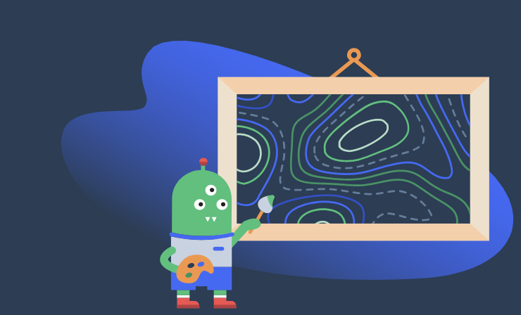

Mapbox Workshop
Geospatial Innovation Facility
Hi, we're
Colleen and Mal.
from
Mapbox
Follow along
http://bit.ly/2eKiF0x
This workshop will cover:
What's possible with Mapbox
How to upload and style data in Mapbox Studio
Adding interactivity to your map using our Mapbox GL JS library
Geospatial analysis using Mapbox+Turf.js
Mapbox wants to change the way people
navigate cities
and
understand
our planet.
We do this by provixding
building blocks
for integrating brand and location into any
mobile
or
online
app.
Maps
Search
Navigation

Workshop!
Here's what you'll be making today.
Here's what you'll need to get started:
Sign up for a
Mapbox Studio account
Download
GeoJSON data
Adding data to a map style
Export the dataset to a tileset
Add the tileset to a new style
Create a new layer within the style for the tileset
thank you.
happy mapping!
Colleen and Mal
from
Mapbox